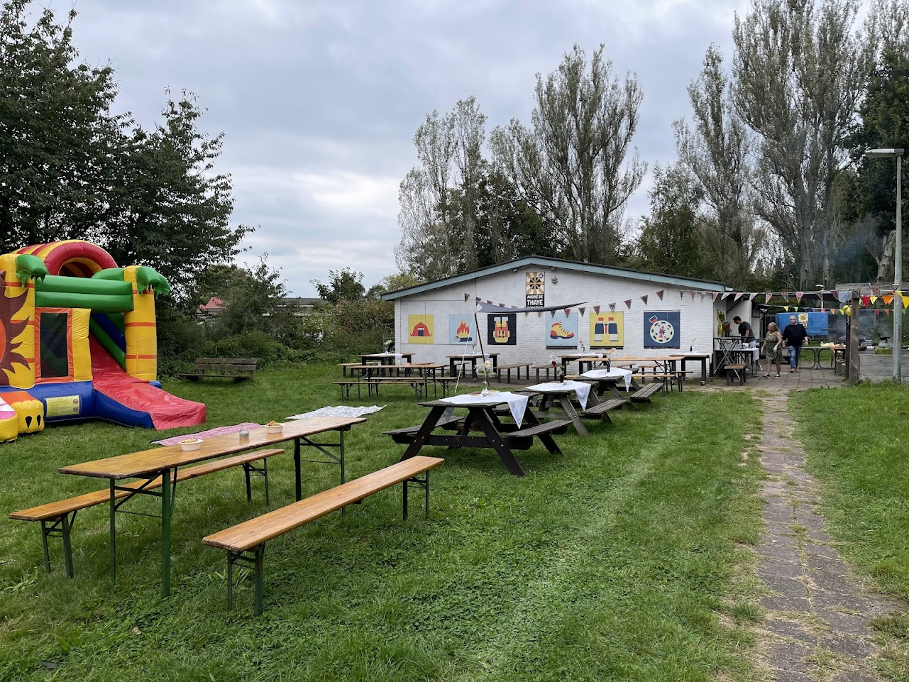

Laat je uitdagen
Kom ook eens kijken bij scouting Andre de Thaye! Bij ons maak je vrienden, ga je op avontuur en iedere opkomst is weer anders. Nieuwsgierig? Kom een keer langs tijdens onze opkomsten.
| 7 - 11 jaar | Welpen | vr 19:00-20:30 |
| 11 - 15 jaar | Scouts | vr 19:30-21:00 |
| 15 - 18 jaar | Explorers | - |
| 18-21 jaar | Rovers | vr 21:00-00:00 |
| 18-21 jaar | Trolleystam (studenten scouting) |
di 18:00-00:00 |
| 21+ jaar | +Scouts | vr 21:30-00:00 |
Bij scouting Andre de Thaye zijn we altijd op zoek naar nieuwe stafleden. Mensen die graag met kinderen samenwerken om ze een fantastisch opkomst te geven. Je komt te werken in een team van enthousiaste vrijwilligers die elke week weer een leuke opkomst neerzetten.
Daarnaast kun je lid worden van de +Scouts. Een groep van 21+ die nog steeds actief is binnen de scouting. We organiseren vaak leuke activiteiten, hebben jaarlijks een +Scouts weekend, doen natuurlijk mee met de Jotihunt (de grootste vossenjacht van Nederland) en nog veel meer. Lijkt het je wat? Neem dan contact met ons op.
Onze blokhut is beschikbaar voor permanente verhuur en kinderfeestjes.
Op zoek naar een mooie locatie voor een kinderfeestje? Het kan bij Scouting Andre de Thaye! Met een groot grasveld, diverse picknick banken, een uitgebreide keuken en 2 zalen voor maximaal 50 personen is dit de locatie voor jouw kind om zijn/haar feestje te vieren. Geïnteresseerd? Neem contact op met onze verhuur coordinator.
